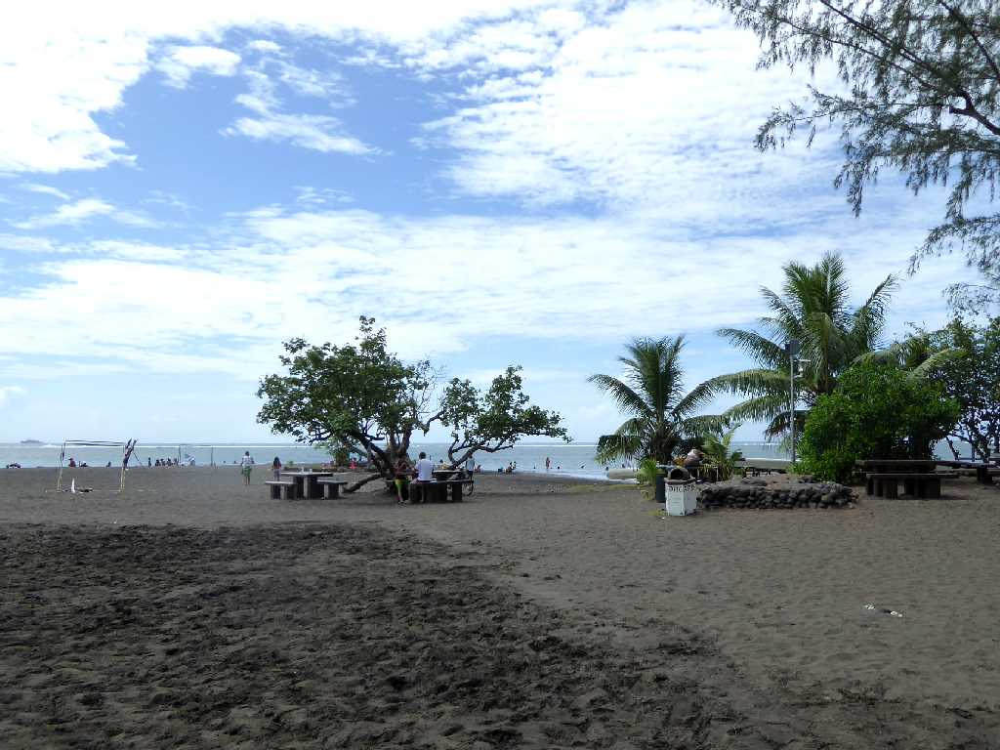
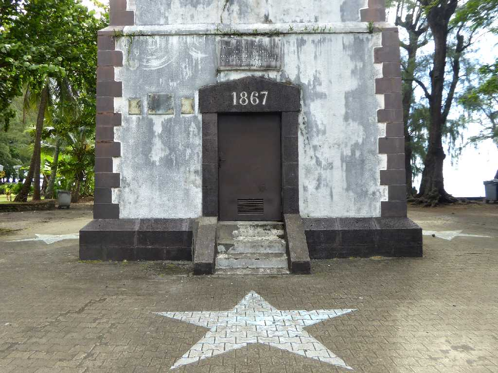

Pointe Venus Mahina Tahiti Island
キャプテンクックが地球と太陽の距離 １天文単位 を確定するためにここで 金星の太陽面通過 The Transit of Venus Across the Sun を観測したと云われているためビーナス岬と呼ばれている
Phare de la Pointe Vénus Mahina
１８６７年に創られた灯台

Phare de la Pointe Vénus